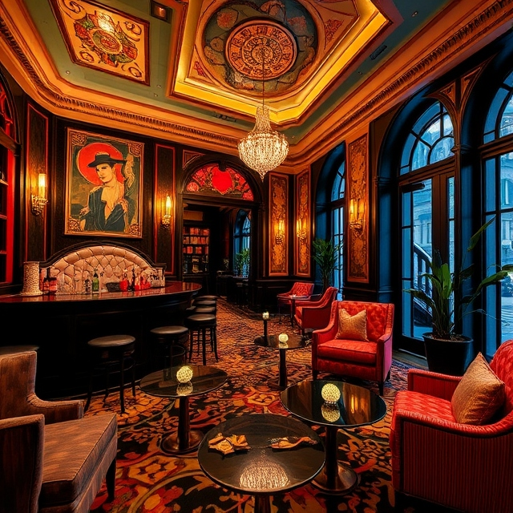

Founded on the principles of elegance and artistic expression, The Gatsby Grande redefines luxury hospitality. Blending the lavishness of the 1920s with modern amenities, our vision stems from an appreciation for the opulence of the Jazz Age. Bold designs, rich textures, and vibrant colours characterize our meticulously curated decor. From handcrafted cocktails in our speakeasy to personalized service, every detail pays homage to glamour and sophistication.
Our dedicated team embodies warmth and sophistication. From customizing spa treatments to curating unique city experiences, we ensure unforgettable moments where your comfort is paramount. Indulge in a lifestyle of luxury at The Gatsby Grande, where every stay is a celebration of elegance and artistic flair.
Nestled in the heart of New York City, The Gatsby Grande is conveniently located near iconic sites like Central Park, The Metropolitan Museum of Art, and renowned shopping districts. Easily accessible via public transportation and with parking options available, exploring the city from our prime location is effortless.
What Our Guests Say
“An unforgettable experience! The decor is stunning, and the service is impeccable.” – Jane Smith
“Our wedding at The Gatsby Grande was a dream come true. Every detail was perfect!” – John & Emily Doe
Explore more guest reviews that highlight the charm and allure of staying at The Gatsby Grande.